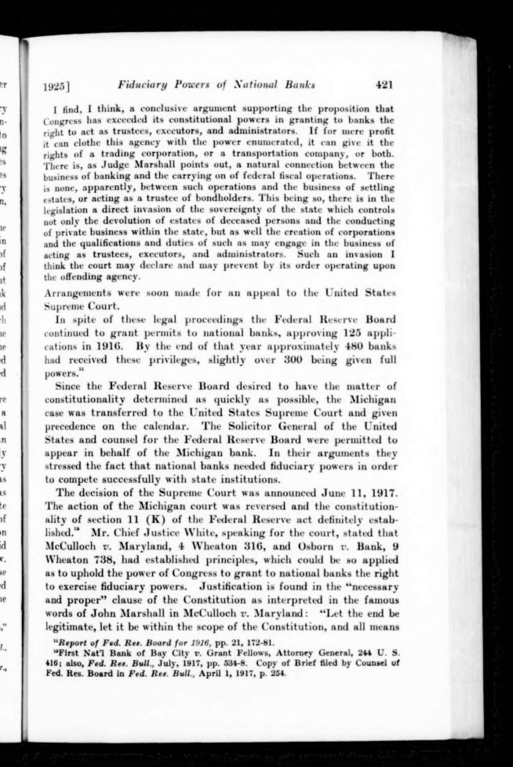

MacLeod, 1925: uma câmara de compensação entre os Kwakiutl
Leitura: 5 min
William Christie MacLeod descreve opções, empréstimos a juros e uma compensação de dívidas feita diante de testemunhas entre os Kwakiutl da Colúmbia Britânica, e discute de onde viriam essas práticas.


Numa venda pública entre os Kwakiutl, o comprador empilhava cobertores diante do vendedor. Se não tivesse o bastante, chamava um a um os presentes que lhe deviam e pedia que pagassem. O devedor sem recursos podia pedir crédito ao vendedor, que tirava cobertores da pilha e os entregava ao devedor, que os passava ao comprador, que os devolvia à pilha. William Christie MacLeod, da Wharton School, chama esse procedimento de câmara de compensação primitiva.
O ponto de partida é uma nota recente do Economic Journal, de W. E. Armstrong, sobre o sistema monetário da Ilha Rossel, na Melanésia, que levantara a questão do juro numa comunidade primitiva. MacLeod propõe outro caso, entre os povos aborígines da América.
O que era o potlatch?
As tribos Kwakiutl, não agrícolas, da costa da Colúmbia Britânica, tinham levado ao extremo o potlatch, troca em grande escala de presentes por presentes, que o autor compara ao Natal em pequena escala. Era a forma kwakiutl de exibir riqueza: um homem rico, ou um grupo pelo chefe, distribuía todos os bens num potlatch, e os que recebiam devolviam o equivalente em potlatches futuros. A posição social dependia da riqueza relativa.
“A cultura Kwakiutl era uma cultura pecuniária em grau ainda maior do que a nossa.” (Kwakiutl culture was a pecuniary culture even in a greater degree than ours is.)
A obrigação de retribuir era social, não legal. Os Kwakiutl tinham uma moeda, com conchas e cobertores como unidades de valor, e os potlatches eram frequentes; o volume de trocas, escreve MacLeod, era muitas vezes maior do que se esperaria fora de uma cultura avançada. Esse volume foi o solo das opções, do juro e da compensação.
Como funcionavam opções e compensação?
Nos potlatches se compravam e vendiam “cobres”, objetos de prestígio de grande valor. Quem queria garantir o direito exclusivo de comprar um cobre, caso fosse posto à venda no futuro, procurava o dono em segredo, antes dos rivais, e lhe pagava um adiantamento sobre o preço; isso se chamava “ancorar” o cobre. A compensação se fazia diante da tribo reunida como testemunha. O manuseio dos cobertores apenas tornava visível a transferência de contas. O método se chamava “dar para fora da porta”, e a pilha era chamada figurativamente de casa. MacLeod compara a rusticidade do procedimento à transferência de terras na Inglaterra medieval pelo costume de entregar um torrão e um ramo do terreno, que persistiu na Pensilvânia até o século XVIII.
Havia também muito empréstimo a juros, estimulado pelo potlatch mas comum nos negócios. Não havia termo genérico para juro: cada tipo de empréstimo, segundo valor, prazo e taxa, tinha nome próprio; para o autor, um traço linguístico primitivo aplicado a processos financeiros “tudo menos primitivos”. A taxa variava com o valor, o prazo, a oferta de recursos e o crédito do tomador, e em geral era enormemente alta. O conceito se espalhava dos Kwakiutl para as tribos vizinhas da costa noroeste.
De onde vieram essas práticas?
Segundo MacLeod, os Kwakiutl, e em menor grau os vizinhos que os imitaram, eram o único povo da América aborígine com o conceito de juro e esses outros expedientes. Mesmo os astecas, comercialmente avançados, não tinham noção de juro. O volume de trocas criava uma necessidade urgente, mas, adverte o autor,
“Uma necessidade não produz uma ideia.” (a need will not produce an idea)
Todos os povos americanos, escreve, precisavam muito de veículos de rodas, mas nunca inventaram a roda. A influência dos comerciantes da Hudson Bay Company poderia explicar o enigma, mas a terminologia não indica essa origem, e os Kwakiutl eram, em relação às coisas europeias, um tanto conservadores. Para opções e compensação, a única alternativa seria atribuí-las ao gênio inventivo dos Kwakiutl, ou de algum indivíduo kwakiutl. O juro, menos ligado ao potlatch, poderia ter vindo do Velho Mundo pelas costas do Pacífico e pelas ilhas Aleutas, rota pela qual, segundo o autor, chegaram também o arco reforçado com tendões, a armadura, a mumificação, a escravidão hereditária e os jogos de azar. Seria então um exemplo da difusão de um expediente financeiro desde o vale do Eufrates, que para o oeste encontrou na Europa a hostilidade do clero hebreu e cristão e chegou à América com as conquistas, e para o leste entrou pelo Alasca em tempos pré-colombianos. Em nota, MacLeod chama de “ingênua” a crença de que povos diferentes tenderiam a desenvolver o conceito de forma independente.
Na minha leitura
Na minha leitura, a nota é um exemplo da antropologia difusionista aplicada à história econômica: MacLeod trata o juro como uma invenção rara, que se espalha por contato, e não como resposta inevitável a uma necessidade.
O interesse do texto para o economista está na descrição institucional: uma moeda de conchas e cobertores, opções de compra, crédito com taxas que variam com prazo e risco e uma liquidação multilateral de dívidas feita diante de testemunhas.
Glossário
- Potlatch
- cerimônia dos povos da costa noroeste da América do Norte em que se distribuíam bens a serem retribuídos em ocasiões futuras.
- Câmara de compensação
- mecanismo que liquida dívidas recíprocas por transferência de saldos, sem movimentar todo o dinheiro.
- Opção
- direito de comprar um bem no futuro, adquirido por um pagamento antecipado.
- Difusionismo
- corrente da antropologia que explica traços culturais semelhantes pela transmissão entre povos, e não pela invenção independente.
Fontes
- A Primitive Clearing House — William Christie MacLeod (Wharton School, University of Pennsylvania) (pp. 453–456). Internet Archive (número completo, PDF)
- Edição completa, com os demais artigos: Nº 192 do Arquivo.
Documento em domínio público (EUA, publicado antes de 1931), via JSTOR Early Journal Content e Internet Archive. Resumo e comentário do autor deste site, sem afiliação com a American Economic Association. Encontrou um erro? Escreva: a correção é publicada no próprio texto, com data.
← Montgomery, 1925: que teoria da concorrência serve ao governo ↑ Nº 192 · Bancos fiduciários, margens de preço, concorrência e a medida da renda King, 1925: como medir renda e riqueza →